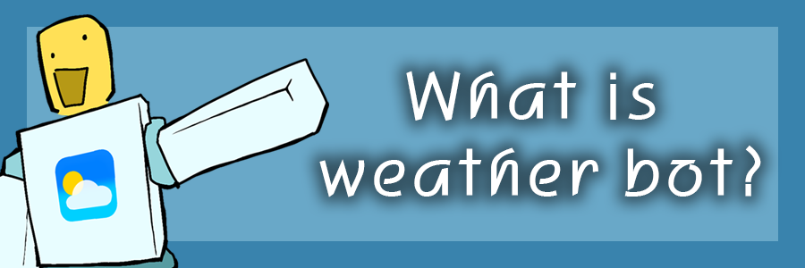

ボット会社
┃ 🌥️ |お天気ボットとは？

Weather bot は、1 つのゲームに留まり、!weather などのチャット コマンドに応答する個別のボットです。ボットのゲームに参加して「!weather cityname」と言うと、その都市の天気を教えてくれます。現在、5 つの異なるサーバーで 5 つの気象ボットが同時に動作しています。
┃ 🌥️ | Weather PLUSについて┃
Weather PLUS は Weath_erBot のプレミアム メンバーシップです。 Weather PLUS を使用すると、PLUS のみのコマンドを通じてより詳細な気象情報にアクセスできます。現地時間を含む、アップグレードされた !weather コマンドにもアクセスできます。 (PLUSコマンドリストは「!pluscmds」で表示できます)
┃ 🌥️ | PLUSアカウントの設定方法┃
Weather PLUS メンバーシップを購入したら、まず「!checkplus」コマンドを使用して本人確認を行う必要があります。これを行う必要があるのは 1 回だけで、この検証は永久に保存されます。 「!checkplus」が機能するには、プライバシー設定ですべてのユーザーが在庫を閲覧できるように設定する必要があります。
(asdasd 言う フィードバックをお寄せください 👍)